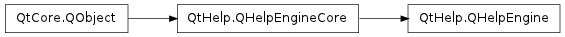

QHelpEngine ¶

Synopsis ¶
Functions ¶
- def contentModel ()
- def contentWidget ()
- def indexModel ()
- def indexWidget ()
- def searchEngine ()
Detailed Description ¶
The PySide.QtHelp.QHelpEngine class provides access to contents and indices of the help engine.
- class PySide.QtHelp. QHelpEngine ( collectionFile [ , parent=None ] ) ¶
-
Parameters: - collectionFile – unicode
- parent – PySide.QtCore.QObject
Constructs a new help engine with the given parent . The help engine uses the information stored in the collectionFile for providing help. If the collection file does not already exist, it will be created.
- PySide.QtHelp.QHelpEngine. contentModel ( ) ¶
-
Return type: PySide.QtHelp.QHelpContentModel Returns the content model.
- PySide.QtHelp.QHelpEngine. contentWidget ( ) ¶
-
Return type: PySide.QtHelp.QHelpContentWidget Returns the content widget.
- PySide.QtHelp.QHelpEngine. indexModel ( ) ¶
-
Return type: PySide.QtHelp.QHelpIndexModel Returns the index model.
- PySide.QtHelp.QHelpEngine. indexWidget ( ) ¶
-
Return type: PySide.QtHelp.QHelpIndexWidget Returns the index widget.
- PySide.QtHelp.QHelpEngine. searchEngine ( ) ¶
-
Return type: PySide.QtHelp.QHelpSearchEngine Returns the default search engine.